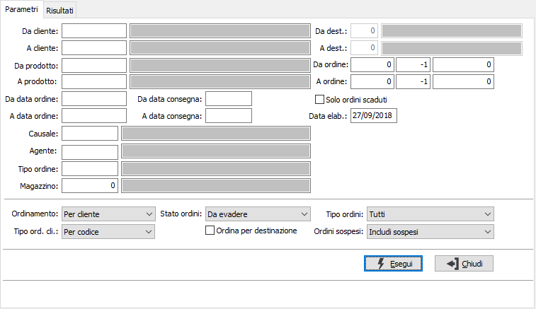
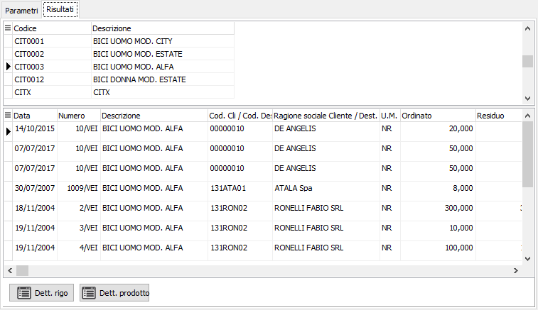

Analisi ordini
Il programma effettua la visualizzazione degli ordini esistenti in archivio in base ai parametri inseriti dall’utente.
E’ possibile visualizzare gli ordini relativi ad una tipologia omogenea di causali, e/o ad uno o più clienti, e/o ad uno o più prodotti, e/o relativi ad uno specifico magazzino di partenza entro limiti di data specificati.
E’ possibile selezionare solo gli ordini aperti oppure tutti gli ordini.
Il programma si articola su due finestre video. La prima, Parametri, consente la definizione dei parametri di analisi.

DA CLIENTE: eventuale codice del cliente, presente in anagrafica clienti, da cui si vuole iniziare la selezione di analisi. Confermando a vuoto, la selezione inizia dal primo cliente valido. Sul campo sono attive le funzioni di ricerca (F9).
A CLIENTE: eventuale codice del cliente, presente in anagrafica clienti, con cui si vuole terminare la selezione di analisi. Confermando a vuoto, la selezione termina con l’ultimo cliente valido. Sul campo sono attive le funzioni di ricerca (F9).
DA DESTINAZIONE: codice della destinazione del cliente, da cui si vuole iniziare la selezione di analisi. Confermando a vuoto, la selezione inizia dalla prima destinazione valida; il campo è attivo solo se viene analizzato un unico cliente. Sul campo sono attive le funzioni di ricerca (F9).
A DESTINAZIONE: codice della destinazione del cliente, con cui si vuole terminare la selezione di analisi. Confermando a vuoto, la selezione termina con l'ultima destinazione valida; il campo è attivo solo se viene analizzato un unico cliente. Sul campo sono attive le funzioni di ricerca (F9).
DA PRODOTTO: eventuale codice dell'articolo, presente in anagrafica prodotti, da cui si desidera iniziare la selezione di analisi. Confermando a vuoto, la selezione inizia con il primo prodotto valido. Sul campo sono attive le funzioni di ricerca (F9).
A PRODOTTO: eventuale codice dell'articolo, presente in anagrafica prodotti, a cui si desidera terminare la selezione di analisi. Confermando a vuoto, la selezione termina con l’ultimo prodotto valido. Sul campo sono attive le funzioni di ricerca (F9).
DA ORDINE: indicare anno, serie (-1 tutte), e numero da cui iniziare l'elaborazione.
A ORDINE: indicare anno, serie (-1 tutte), e numero con cui terminare l'elaborazione.
DA DATA ORDINE: eventuale data del documento da cui deve iniziare l’analisi dei documenti relativamente ai precedenti parametri di selezione. Confermando a vuoto, l’analisi inizia con il primo documento valido.
A DATA ORDINE: eventuale data del documento con cui si desidera terminare l’analisi dei documenti relativamente ai precedenti parametri di selezione. Confermando a vuoto, l’analisi si conclude con l'ultimo documento valido.
DA DATA CONSEGNA: eventuale data di consegna da cui deve iniziare l’analisi dei documenti relativamente ai precedenti parametri di selezione. Confermando a vuoto, l’analisi inizia con il primo documento valido.
A DATA CONSEGNA: eventuale data di consegna con cui si desidera terminare l’analisi dei documenti relativamente ai precedenti parametri di selezione. Confermando a vuoto, l’analisi si conclude con l'ultimo documento valido.
SOLO ORDINI SCADUTI: se spuntato seleziona tutti gli ordini ancora aperti la cui data di consegna è inferiore rispetto alla data di elaborazione.
DATA ELABORAZIONE: è la data in cui viene effettuata l'analisi, viene proposta la data con cui ci si è collegati ad OS1.
CAUSALE: eventuale codice della causale degli ordini a cui si vuole restringere la selezione di analisi. Sul campo sono attive le funzioni di ricerca (F9) sulla tabella omonima.
AGENTE: eventuale codice dell'agente a cui si vuole restringere la selezione di analisi. Sul campo sono attive le funzioni di ricerca (F9) sulla tabella omonima.
TIPO ORDINE: eventuale codice della tipologia di ordini (gruppo di causali omogenee) a cui si vuole limitare la selezione di analisi. Sul campo sono attive le funzioni di ricerca (F9) sulla tabella omonima.
MAGAZZINO: eventuale codice del magazzino a cui si vuole restringere la selezione di analisi. Sul campo sono attive le funzioni di ricerca (F9) sulla tabella omonima.
ORDINAMENTO: combo box per definire i criteri di ordinamento. Valori ammessi: Per cliente; Per prodotto.
TIPO ORDINAMENTO CLIENTE: attivo solo se l'ordinamento è per cliente; definisce se i clienti devono essere riportati per codice o per ragione sociale.
STATO ORDINI: definisce lo stato dei documenti da selezionare. Valori ammessi: tutti, da evadere, già evasi, solo completamente inevasi, solo parzialmente evasi, solo totalmente evasi.
ORDINA PER DESTINAZIONE: attivo solo se l'ordinamento è per cliente; definisce se l'analisi deve essere impostata per cliente/destinazione.
TIPO ORDINI: il campo è presente solo se è attivo il modulo del conto lavoro attivo; consente di specificare quali ordini si vogliono analizzare: tutti, solo quelli del conto lavoro attivo, solo ordini di vendita escludendo quelli del conto lavoro attivo.
ORDINI SOSPESI: il campo è presente solo se è attiva la gestione degli ordini sospesi, consente di specificare se nell'analisi devono essere mostrati gli ordini sospesi; può assumere i valori di Includi sospesi, Solo sospesi, Escludi sospesi.
Confermando tramite pressione del bottone Esegui, viene avviata la selezione e richiamata la finestra video Risultati.

La finestra video è articolata su due sezioni: la sezione superiore elenca i clienti, clienti/destinazione o gli articoli selezionati in base al tipo di ordinamento scelto.
La sezione inferiore elenca invece i movimenti relativi al cliente, al cliente/destinazione oppure all’articolo selezionato, che è quello contrassegnato dalla freccia, a sinistra del rigo nella sezione superiore. I pulsanti Dettaglio in basso, visibili solo se gestito il dettaglio delle quantità, se attivi, consentono la visualizzazione del dettaglio quantità del singolo rigo selezionato, oppure, se l'analisi è per prodotto, dei dettagli quantità totali del prodotto selezionato.